一、前期回顾
“美军网络安全”系列第一篇（美军网络安全 | 开篇： JIE （联合信息环境）概述）介绍了美军 JIE （联合信息环境）的总体情况。其主要目标是实现“三个任意”的愿景——美军作战人员能够基于任意设备、在任意时间、在全球范围的任意地方获取所需信息，以满足联合作战的需求。
JIE 的 9 大关键领域如下（通过合并 JIE 的 6 项关键能力和 8 个现代化领域）：1）网络现代化（网络规范化）；2）网络安全体系架构（单一安全架构-SSA/CCA）；3）身份和访问管理（IdAM）；4）企业运营；5）企业服务；6）云计算；7）数据中心整合；8）任务伙伴环境（MPE）；9）移动性。
本系列第二篇（美军网络安全 | 第 2 篇：JIE 网络安全架构 SSA （单一安全架构））介绍了其中第 2 项：网络安全体系架构，即单一安全架构（SSA/CCA），主要是从安全思想和理念层面描述。
本系列第三篇（美军网络安全 | 第 3 篇：JIE 联合区域安全栈 JRSS），从更落地的层面，介绍 SSA 的落地架构 JRSS（联合区域安全栈）。
这一篇（也就是第四篇），将介绍 SSA 中关于跨域连接的解决方案 —— CDS（跨域解决方案）。它在 JIE 框架中的地位如下图所示：
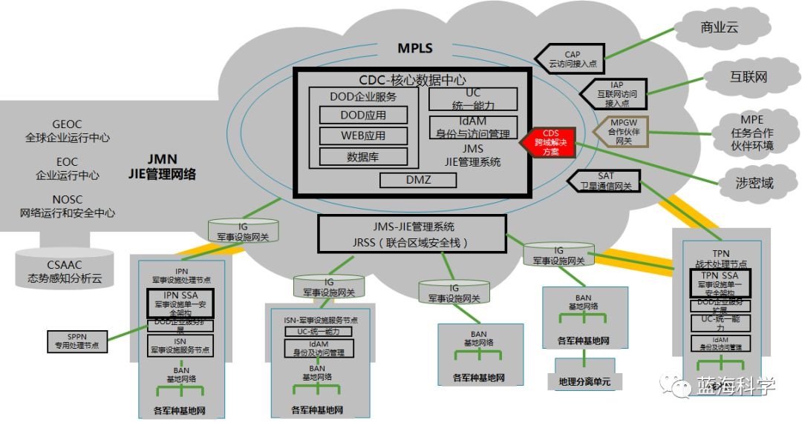
我们曾经提到过，在下面的 JIE 框架图中，所有深红色部分都属于网络安全内容，即 SSA（单一安全架构）涵盖的范畴。所以，CDS 也属于 SSA 的内容。

如果没有 CDS，美军不同密级的网络就不可能联通成“一张网”，更不可能实现美军“三个任意”的愿景了。
二、问题的起因
熟悉涉密网络的童鞋大都知道基本法则：涉密网络与互联网是不能直接或间接连接的，必须实行物理隔离。
这条法则，本来在国内和国外都是适用的。
不过，很早以前，美国、以色列的军方，就搞出了网闸产品，专门用来解决涉密网络与公共网络连接时的安全。网闸产品的学名，在美国叫做“跨域解决方案（CDS）”；在国内称为“安全隔离与信息交换产品”，顾名思义，是既要“隔离”又能“交换”。
但国内方面，一直是要求物理隔离，不存在信息交换。直到后来，电子政务的蓬勃发展，终于从铁板中撬开一条缝隙，允许“电子政务涉密信息系统和与互联网逻辑隔离的电子政务非涉密信息系统的单向导入”。如果觉得这句话理解起来费劲的话，看下图即可：
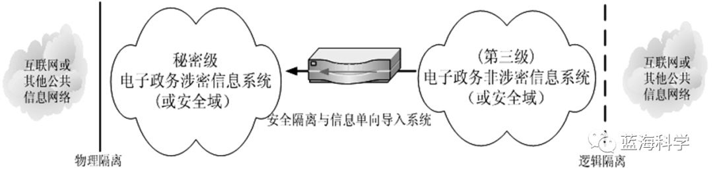
这条原则的确是一项重大突破，不过千万别忘了：在真正实施的时候，还需要相关部门审批，也就是大家谈之色变的“一事一议”了。这个“一事一议”，不知阻挡了多少有梦想的青年！
好了，至此已经引出我想解释的两个关键概念：物理隔离vs.逻辑隔离。
逻辑隔离：
- 逻辑隔离的代表产品是防火墙；
- 逻辑隔离实现的效果是：不同安全等级的网络之间，看起来是断开的，实际上是连通的；
物理隔离：
- 物理隔离的代表产品是网闸；
- 物理隔离实现的效果是：不同安全等级的网络之间，看起来是连通的，实际上是断开的。
现在做道选择题：前面提到的“安全隔离与信息交换产品”名称中的“安全隔离”指的是逻辑隔离，还是物理隔离？
如果你回答的是物理隔离，就可以继续回答下一个问题：“安全隔离与信息交换产品”名称中的“信息交换”采用的是哪个层面的信息交换？IP层、传输层，还是应用层？为什么？
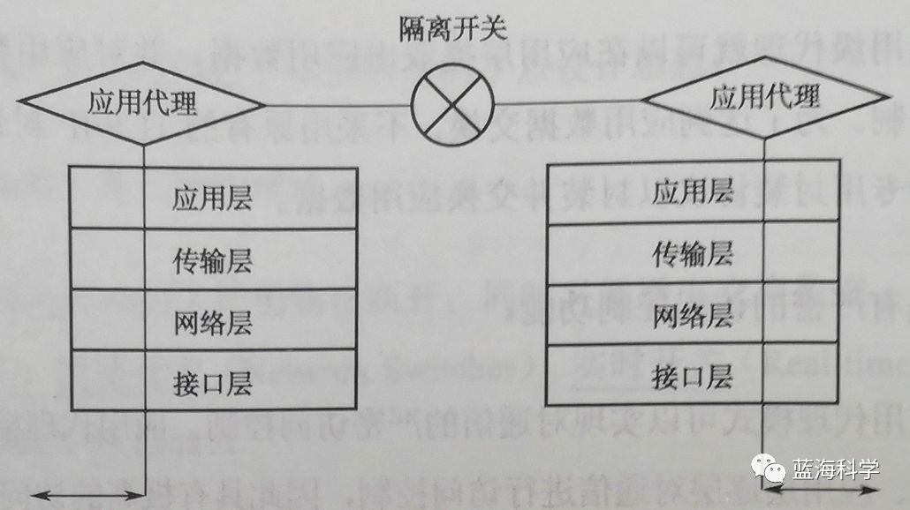
这里给出的安全隔离与信息交换系统的总体架构图，已经表明了答案：必须是应用层交换。
其本质原因在于：信息交换的层次越高，数据就越原始，其中隐藏的安全威胁就越少，相对来说就越安全。
当然，即便是剥离了应用层协议，剩下的应用层数据中，仍然可能包含恶意代码（如基于邮件内容的计算机病毒、基于 Word 文档格式的宏病毒等）或机密信息。所以，通常还需要对应用层数据执行恶意代码检测和数据防泄漏检测。如果能将应用数据中有格式的内容进一步原始化，并进行语义检查，然后在两个网路之间只交换这种数据，则安全性更佳。
下面给出了安全隔离与信息交换系统的系统架构图，包含了一个合格的网闸产品所应具备的所有功能模块，而且一个也不能少！
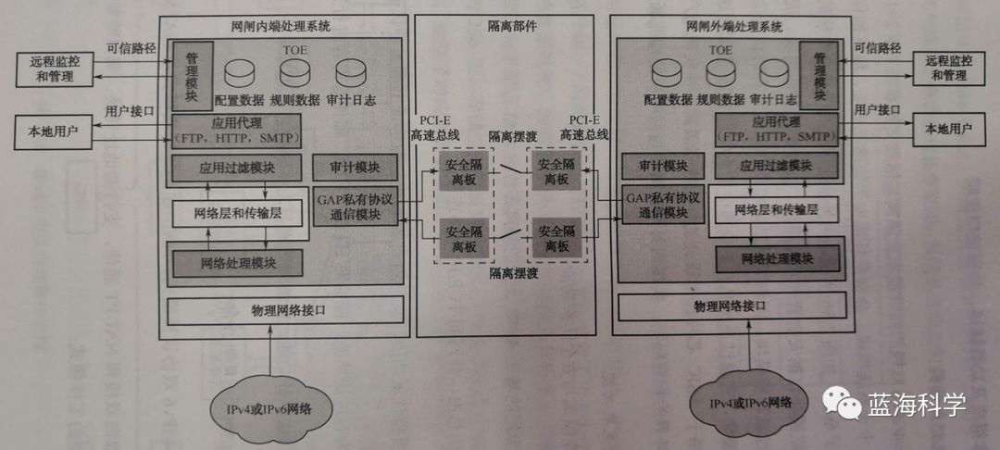
综上，“安全隔离与信息交换产品”的最本质要求是：最强化的隔离 + 最小化的交换。正是这种要求，使得这种产品成为最难搞的产品之一。
三、CDS 概念和澄清
我们看看美国人是怎么定义网闸类产品的。
CDS（Cross Domain Solution，跨域解决方案）：是一种受控接口，提供在不同安全域之间手动和/或自动访问和/或传输信息的能力。简言之，是在两个安全域之间运行的受控接口。
- 受控接口（Controlled Interface）：具有一组机制的边界，这组机制强制执行安全策略并控制相互连接的信息系统之间的信息流。
- 安全域：在共同安全策略下运行的系统或多个系统。
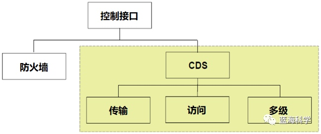
从这张图，可以看出：CDS 和防火墙都是所谓的控制接口。只是单看前面的定义，真是看不出CDS 和防火墙之间有何区别。
所以，我认为前面的 CDS 定义并没有准备反映 CDS 的特别之处。而国内很多人直接使用这个定义来界定 CDS ，自然就会把防火墙也框定到 CDS 的范畴中，产生了本系列第 3 篇末尾我提到的概念混乱问题。
下图这张图可以解释地清楚这一点：
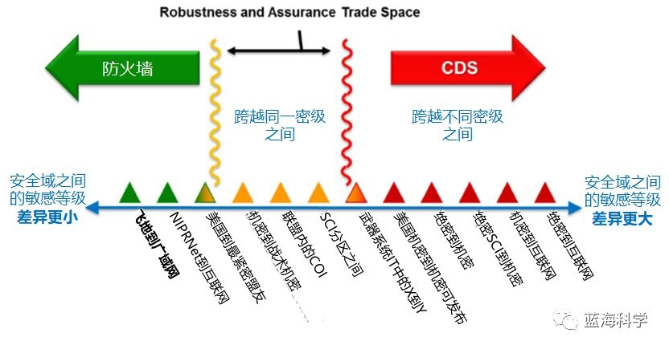
如果还看不明白，美国人也直接给出了 CDS 与防火墙的对比：
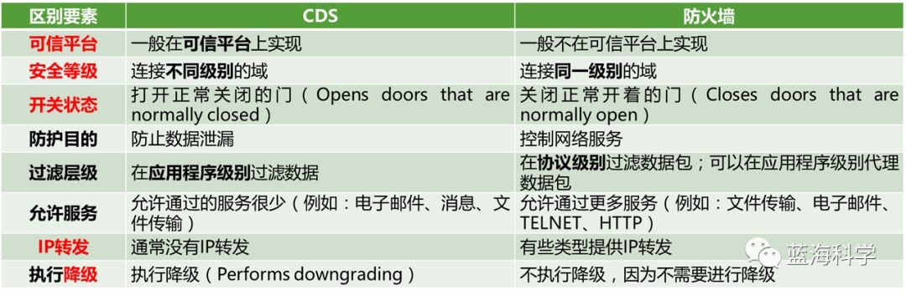
结合前一节中给出的物理隔离和逻辑隔离的概念对比，现在可以确信： CDS 就是指网闸类产品。
四、CDS是方案而非产品
刚才提到美军的 CDS 就是国人常说的网闸。但是，并不仅仅如此，美国人用他们的严谨性证明了 CDS 是一种解决方案，而不仅仅只是个产品。
简单地说，美军CDS并不是在功能上比我国网闸多些什么，而是说CDS根本就不和网闸在一个层面！他们早已跳出产品思维，而从解决方案的高度来看待跨域问题。
为了更有力地支撑我的观点，我搬出国内两个标准：
看出来没？旧标准中称为“隔离部件”，只是“部件”而已！连产品都算不上；2015年的新标准中总算改称为“隔离产品”了。
即便如此，这距离人家提的“解决方案”还是有不小的差距啊！
你不懂“解决方案”和“产品”的区别？好吧。让美国人用CDS教教你。
产品最大的特点是功能；方案最大的特点是场景。
美军首先一上来对场景进行了分类，定义了 CDS 的三种类别：
- 数据传输解决方案：这类方案将在不同安全域中运行的网络或信息系统进行互连，并在它们之间传输信息。
- 访问解决方案：这类方案通过单个工作站提供来自多个安全域的信息的同时可视化，而无需在各个域之间进行任何数据传输。
- 多级解决方案：这类方案存储和处理来自不同安全级别的不同安全域的信息，并允许基于用户许可和授权的访问和重新标记。
传输方案、访问方案、多级方案，分别对应下面左、中、右三张图：
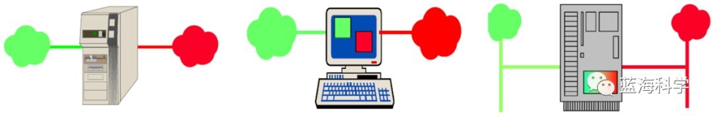
老美大概觉得理论高度还不够，又整出下图，彻底解释了所有物理隔离场景的不同之处。其中，左上象限是我国最擅长的物理隔离场景，其它三个场景分别对应于 CDS 中的传输、访问、多级场景。
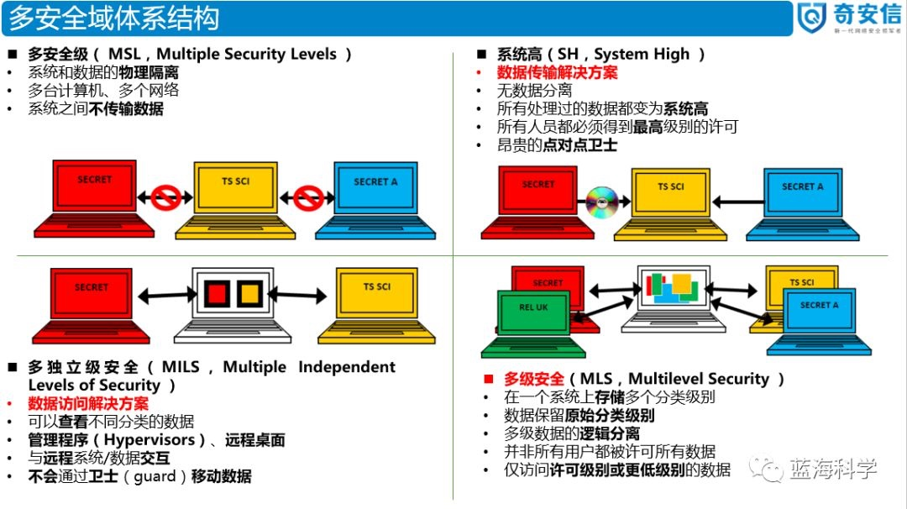
下面这张功能比较表就更牛了，我已经没法再做进一步解释了。
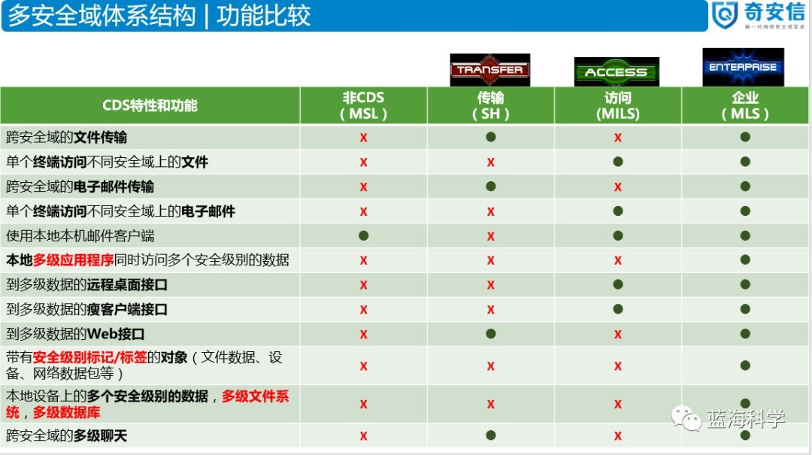
语言文字表达了一堆，可能还是不如一张网络部署图效果更好。老美在下图中把访问型、传输型 CDS 的区别展示得淋漓尽致：
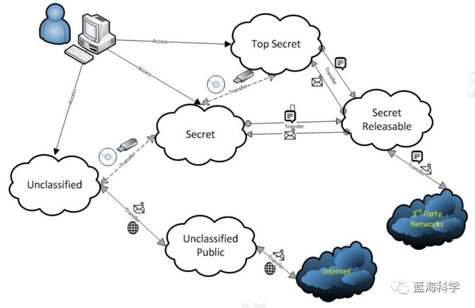
老美进一步对访问型 CDS 和传输型 CDS 进行模型化。
访问型CDS架构：
- 孤立域模型
- 周期处理模型
- KVM切换模型
- 分区工作站模型
传输型CDS架构：
- 气隙
- 数据二极管
- 双向卫士
对于这些模型的具体含义，我就不解释了，大家望图生义吧：
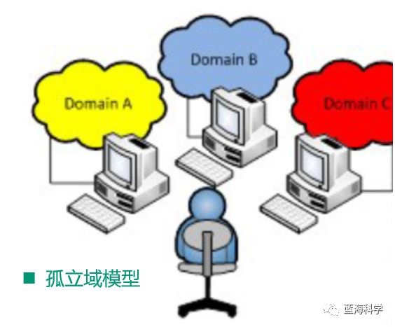
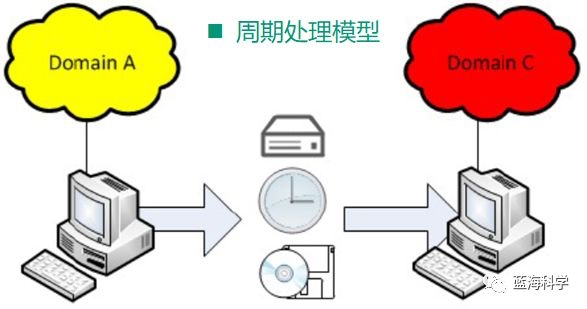
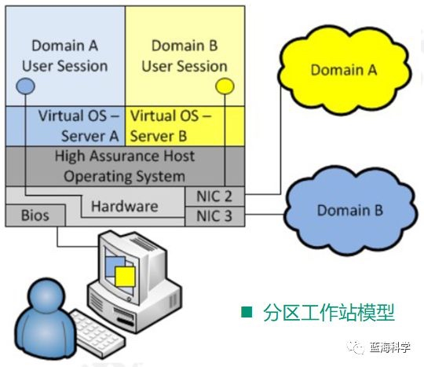
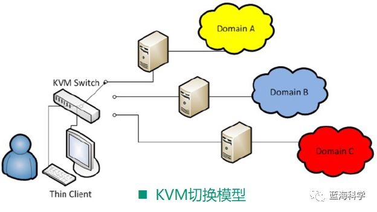
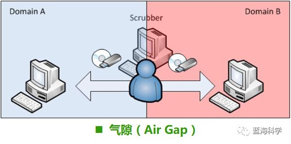
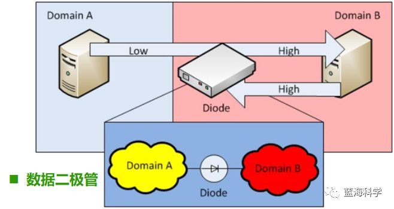
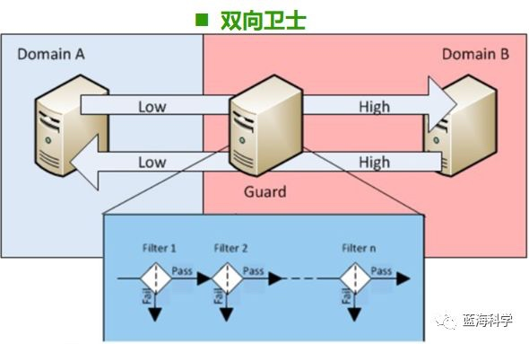
我相信你已经眼花缭乱了。其实每一张图都值得玩味~
五、CDS 需要理论深度
上面简单讲了 CDS 的各种场景，一定程度上反映了广度。
其实， CDS 可以毫不害羞地说：我也是很有内涵和深度的。
CDS 确定了两种安全理论模型：MILS（多独立级别安全）和 MLS（多级安全）。其中，访问 CDS 和传输 CDS 都属于 MILS 体系结构；多级 CDS 属于 MLS 体系结构。
- MILS 体系架构
MILS 体系架构如下图所示：
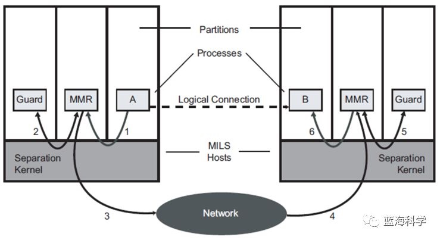
图中，步骤 1-6 展示了 MILS 体系结构中从发送进程（A）到接收进程（B）的消息路径。
MILS 体系结构：是专门为 EAL 5-7 认证而设计的一个系统，是一种可验证、安全的体系结构，用于在同一个高保障系统上执行不同的安全级过程。
guard（卫士）或 mediator（传递者）：是一个应用程序级消息过滤器，是MILS中间件安全组件的一个例子。
MILS 体系结构提供两种类型的隔离：
- 进程隔离：MILS 执行严格控制不同安全级别进程之间通信的分离策略。例如，这样可以防止绝密进程与非机密进程通信。
- 内核隔离：MILS 将传统的内核级安全功能分离到外部模块化组件，这些组件足够小，可以使用形式化方法进行严格的评估。
分离内核（SK，separation kernel）：是 MILS 的基本组成部分。SK将进程及其资源分离到称为分区的独立执行空间中。除非 SK 明确允许，否则在不同分区中运行的进程既不能通信，也不能推断彼此的存在。SK 通过 MILS 消息路由（MMR）组件强制遵守信息流策略。
MILS 消息路由（MMR，MILS message routing）：如果系统策略允许通信，则在不同分区中的应用程序之间路由通信。否则，MMR将不允许分区之间的通信。
MILS 体系结构通过内置于内核中的机制以及中间件组件，来实施系统范围内的信息控制策略，这些组件创建应用程序之间的授权通信路径。
卫士（guard）与MMR一起，强制执行详细的特定于协议的策略。MILS系统中支持的每个应用程序级协议都有一个卫士。如果卫士确定消息的内容不符合信息流策略，则卫士将通知MMR，MMR随后将禁止通信尝试或根据安全策略采取措施。
- MLS（多级安全）体系架构
MLS（多级）CDS：不同于 MILS 体系结构，它将所有数据存储在一个域中。它使用可信标签和集成的强制访问控制（MAC）模式，根据用户凭据和权限分析数据，以验证读取权限和权限。可将 MLS 视为包含访问和传输能力的一站式 CDS。
MLS 优势：与其它 CDS 模型相比，多级（MLS）CDS 可以大大降低访问和操作数据所需的过程，从而带来显著的性能优势。因为可信数据标记和域的合并，消除了内容检查、过滤、净化操作的需要。同步和复制错误也会消除，因为所有客户端都可以访问同一服务器。
MLS 基础： MLS 是基于强制访问控制（MAC）的。目前，两种被广泛使用的 MAC 强制访问控制安全模型是 BLP 模型和 Biba 模型。
- BLP 模型：不上读、不下写原则，以保证数据机密性。即不允许低安全等级的用户读取高安全等级的信息，不允许高敏感度的信息写入低敏感度的区域。禁止信息从高级别流向低级别。强制访问控制通过这种梯度的安全标签实现信息的单向流通。
- Biba 模型：不下读、不上写原则，以保证数据完整性。在实际应用中主要是避免应用程序修改某些重要的系统程序或系统数据库。由于 BLP 模型存在不保护信息的完整性和可用性，不涉及访问控制等缺点，所以使用 Biba 模型作为一个补充。
BLP 模型和 Biba 模型的原理示意图如下所示：
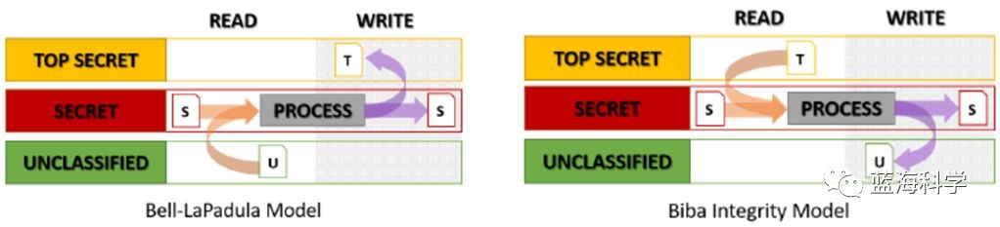
真正的强制访问控制操作系统并不多见。目前，SELinux（增强Linux操作系统）和PitBull（美国通用动力公司操作系统）是 Linux 内核唯一经过验证的强制访问控制系统。
正因为 MLS 架构必须基于强制访问控制操作系统，而这样的操作系统又屈指可数，所以，MLS 的开发非常困难，而且成本高昂。
而且，MLS 在获得资质认证之前必须进行严格的安全分析。即使有了可信计算基架构或参考监视器，也有太多东西需要评估。
相比之下，MILS 体系结构的开发，将安全机制和关注点分离成可管理组件。这种分而治之的方法，以指数形式减少了安全系统的验证工作。从而避免了 MLS 系统认证的困难。
六、CDS 服务化
美军一直有着非常强烈的安全服务化的思想，对于 CDS 也不例外。在 CDS 场景中， DISA 的 CDS 企业服务被称为 CDES（跨域企业服务）。
CDES（Cross Domain Enterprise Service，跨域企业服务）：CDES 通过实施、部署和提供 CDS 技术的生命周期支持，为作战指挥、军种和机构提供支持，这些 CDS 技术在整个国防部提供安全互操作能力。
任务：代表国防部各部门运行统一的 CDS ，开发强大的跨域部署能力。
愿景：在一个安全、统一的企业环境中，促进不同安全域之间的数据传输，为 DoD 和其他政府机构客户提供企业、企业托管、特定于任务的跨域服务。
作用：CDES 促进了点对点 CDS 的整合，并提供了可移动媒体和人工跨域传输的自动化替代方案，降低了国防部信息网络的总体风险。
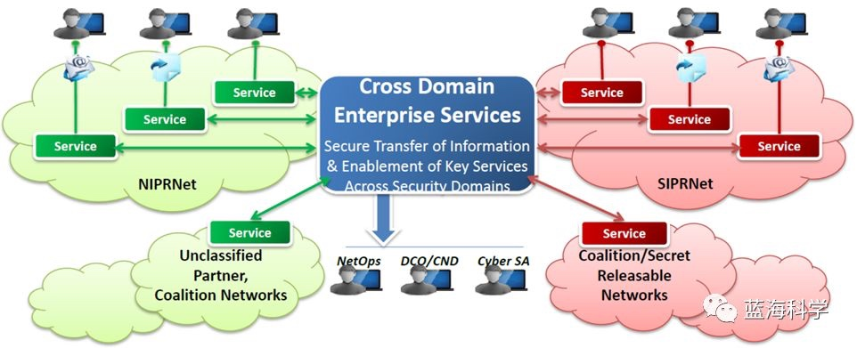
从下图中，我们还注意到：跨域访问过程的指标、警报、日志、流量收集等信息，都会收集并传送给国防部的态势感知系统中。这一点与本系列第二篇中描述的SSA（单一安全架构）与态势感知的关系是一致的。
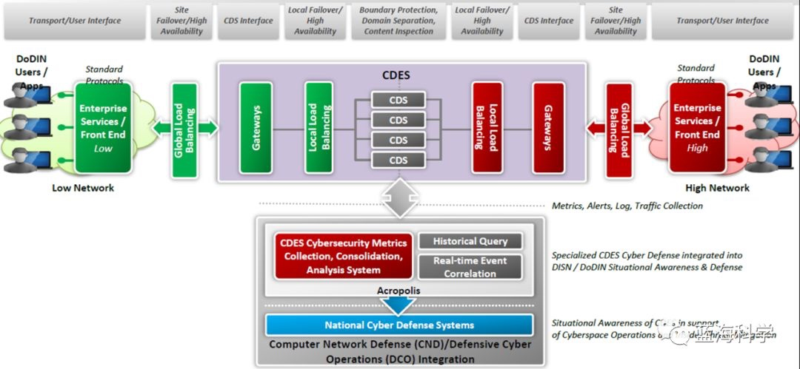
七、美军跨域政策
美国国防部出台了专门的 CDS 政策文件，洋洋洒洒近 60 页。虽然我们已经全文翻译，也只打算摘录两页：
国防部政策：
- a.不同安全域之间的信息流将根据任务要求评估结果、执行和遵守安全要求，以及对相关风险的评估，被授权满足基本任务要求。
- b.每个 CD 信息流的作战需求必须与所有受影响的 IS 和国防部的风险相平衡。风险水平将由国防部风险主管评估和衡量风险是否可接受。
- c.必须通过统一跨域服务管理办公室（UCDSMO）管理的 CDS 基线列表中列出的 CDS ，满足国防部 CD 能力要求。当 CDS 基线列表中 CDS 不能满足任务的 CD 能力要求时，将根据本说明程序中对 CD 备选方案的分析，根据选择决定使用修改后的 CDS 基线列表 CDS 或新技术。
- d.为满足现代化或新能力需求而提出的新 CD 技术，将由安全控制评估员（SCA）对功能和安全需求进行评估。
- e.当现有企业 CD 服务提供商（ECDSP）的企业 CD 服务或企业托管 CDS 的使用满足国防部各部门的 CD 任务要求时，国防部将采用它们。仅当企业解决方案不能满足 CD 功能要求时，才将利用其他可操作 CDS ，部署 CDS 基线列表点对点 CDS 或开发新的 CD 技术作为替代解决方案。
- f.以 CDS 为组件（如飞地）或 CDS 为单独 IS（如企业 CD 服务）的国防部 IS（信息系统），必须由授权官员（AO）授权运行。
- g.国防部级别的风险决策，即使用 CDS 访问或传输不同互联安全域之间的信息，必须由指定的国防部风险主管根据本指令作为 CDS 授权（CDSA）作出。
- h.所有 CDS 将部署和管理在 CD 互连的控制域上。CDS 将被单独授权作为 IS 或其部署所在 IS 中的 CDS 组件进行操作。
- i.UCDSMO 管理的 CDS日落清单上的 CDS 或不在 CDS 基线清单上的遗留 CDS，必须在 AO 和国防部风险主管同意的时间内更换。操作不在 CDS 基线列表中的 CDS 需要一个例外许可。
- j.如果发现 CDS 未经批准或不符合批准的安全配置，则需要立即通知国防部指挥链，以确定是否断开或停止使用 CDS 。
- k.不同安全域之间传输的信息，必须按照国防部手册 5200.01 第 1 卷至第 4 卷正确标记、保护和传播。
国防部 CDS 连接流程图如下：
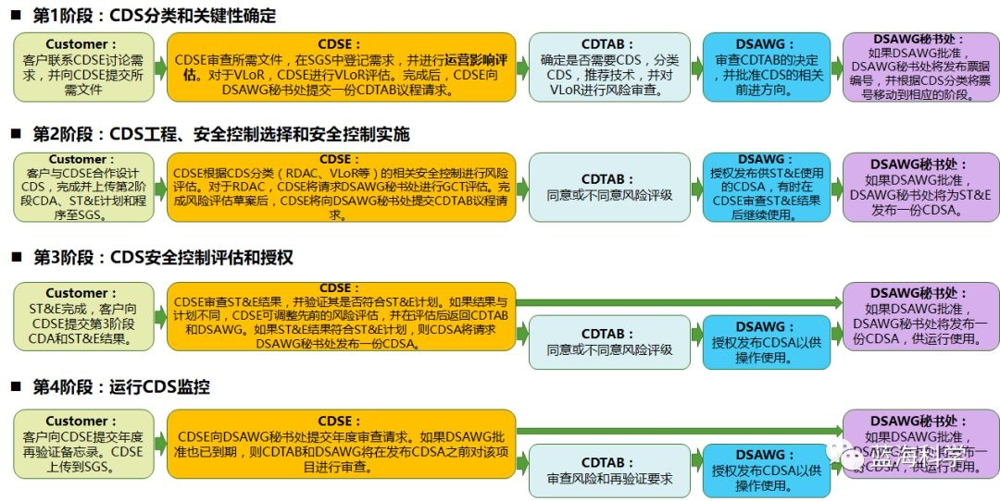
而且，一张详尽的 CDS 运行环境场景表也是必填的：
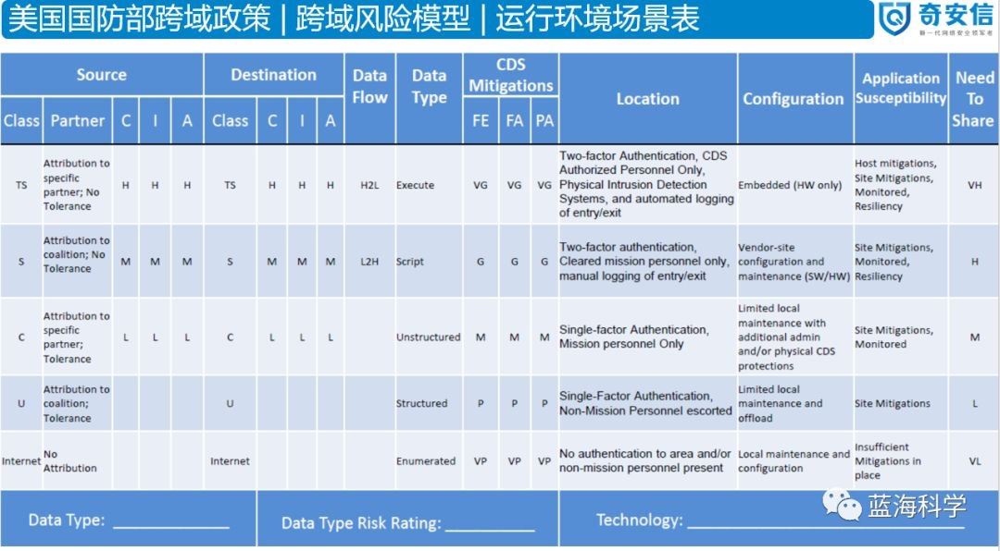
总之，美国国防部为 CDS 的认证、评估、实施、部署，配套设置了标准化的制度和流程，而且努力压缩评估周期，才使得 CDS 产品成为美军不同密级网络间联通的标准配置，而非“一事一议”。
八、美国 CDS 产品
说了这么多，大家应该相信：美军在 CDS 方面是做到家了。但如果不展示一下老美的 CDS 产品，大家还是很难想象它的品类有多么丰富。我就挑选几个吧：
- 通用动力公司（General Dynamics ）多级安全产品
通用动力公司有非常完整的 CDS 产品线，包括传输、访问、多级 CDS 产品。如下图所示：
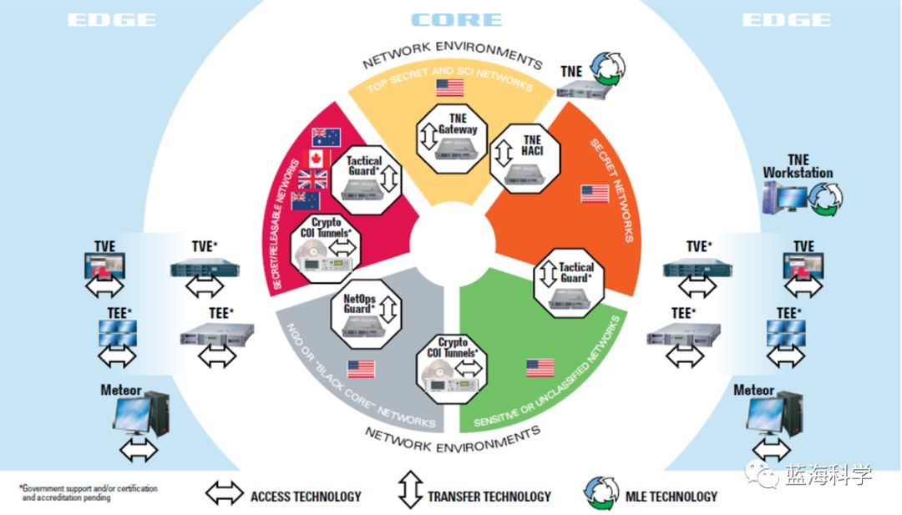
最有特色的是 TNE（可信网络环境），它是经过 UCDMO（国防部跨域办公室）认证的唯一 MLS（多级安全）桌面企业解决方案。TNE 多级安全产品线包括：
- MLS 文件服务器：在中央系统上分离和存储多个级别的文件；
- MLS 邮件代理（客户端）：“一个窗口”查看所有电子邮件。从多个来源，分离和管理多个级别的电子邮件；
- MLS Web 服务器：通过 Web 浏览器提供对多级信息的 Web 访问；
- MLS 数据库服务器：单个数据库中的多级信息仓库。在数据库中分离和存储多个级别的信息；
- 审计服务器：收集受信任网络中的审计文件以进行集中审计。与 Splunk 等行业工具互操作。
- TNE 桌面（厚）：提供标准的 TNE 功能和可移动媒体功能；
- TNE 桌面（瘦）：以最小的占地面积提供标准的 TNE 功能；
- 受控接口：提供连接到受信任网络的单级网络的 CDS 连接；
从 TNE 资源管理器的截图界面中，可以看出，资源管理器已经内置了密级标识，并且用各种颜色标识。很明显，红色都是高密级的对象。
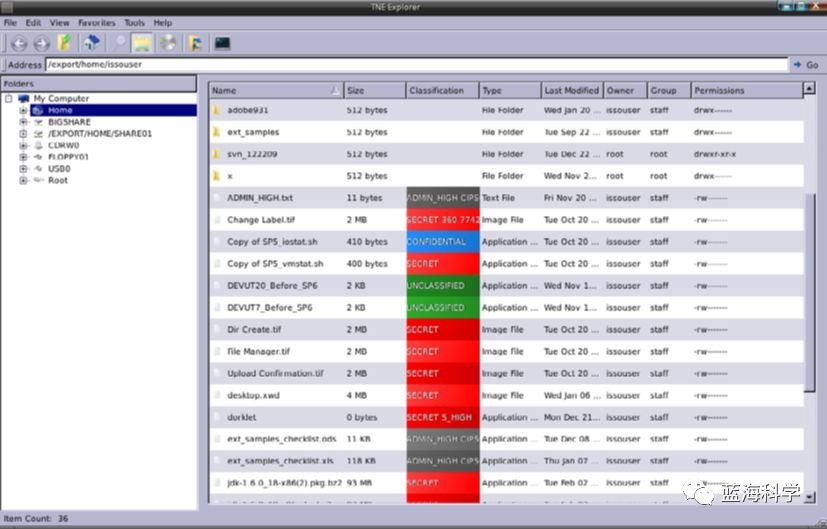
可惜，到现在，我都没亲眼见过这种资源管理器。切记，这是非常罕见的多级安全产品。
前面已经提到过的强制访问控制操作系统 Pitbull 可信操作系统，也是通用动力公司的杰作。正是 Pitbull 为其多级安全（MLS）产品提供了实现基础。
通用动力的 TVE（可信虚拟环境）产品，如下图所示，属于访问型 CDS，可以在单台计算机上，同时查看多个安全级别。TVE 使用 VMware 虚拟化技术，在一台计算机中创建虚拟机（VM）。每个虚拟机可以在共享计算机和监视器上的单独窗口中运行不同的操作系统和安全级别。这些窗口可以单独或同时查看。这个很像我们常用的 VMware 虚拟机，不过它已经通过国防部和情报界认证，并被列入国防部跨域办公室的 CDS 基线列表。它的安全性是有足够保障的，不像我们常用的虚拟机轻而易举就可以在不同虚拟机之间传递文件。
通用动力的多级桌面就更厉害了，如下图所示，打开的不再是一个个的虚拟机，而是直接在每个应用程序窗口栏上显示密级颜色，应用程序之间可以实现了应用隔离。这种能力也是建立在 Pitbull 可信操作系统之上的。普通操作系统无法实现。
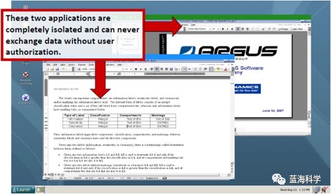
- OWL 公司单向传输产品
OWL 是美国数据二极管网络安全解决方案的市场领导者。它的所有产品都是基于数据二极管的单向传输原理。
其传输型产品也很丰富：
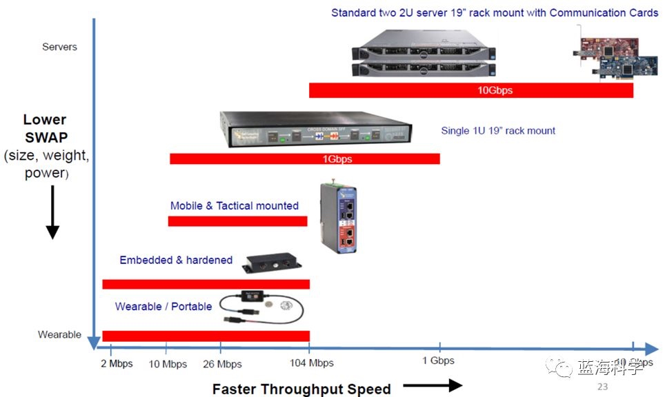
比如 OCDS-ST06 全动态视频传输解决方案，可以使用非涉密环境中的波音无人机，远程收集流媒体视频信息，再单向传输给涉密地面站。实现战场环境侦察。
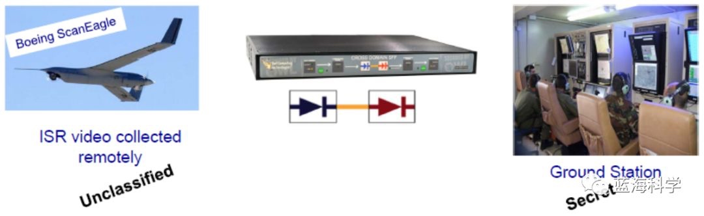
最有特色的是它的小型化跨域解决方案（MCDS），号称是“硬币大小”的解决方案， 应该是市场上最便携的 CDS 。它也可以实现从非密网连接到机密网，由于非常便携，非常适合徒步士兵、嵌入式车辆计算机或任何其他需要考虑尺寸和重量的环境，可满足高度机动、战术任务的要求。
2018 年，OWL 还推出了基于云的“云到云”高速跨域解决方案。可以将大量数据从一个云快速移动到另一个具有不同安全等级的云，最大能满足 25 Gbps 的吞吐率。
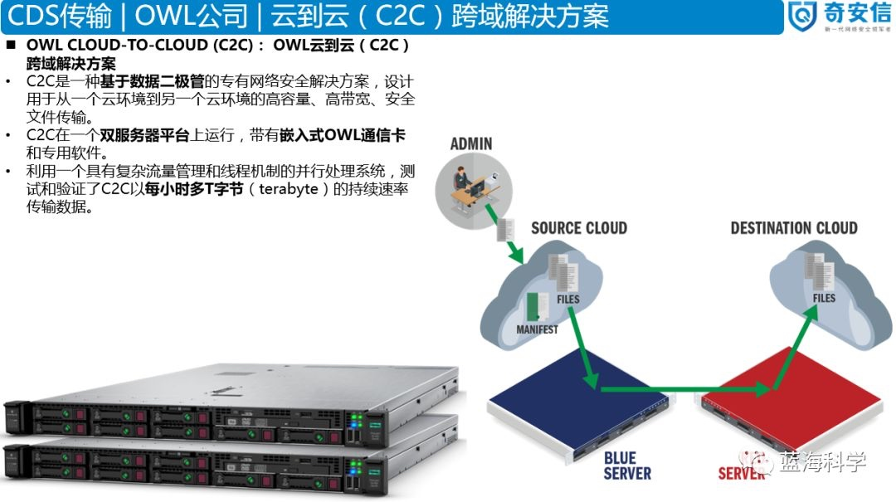
为了保证安全性，这种云跨域解决方案，需要 3 种管理员（系统管理员 + 清单管理员 + 流量管理员）共同完成。而且，全程只有文件清单会落盘，所传输的文件都不会落盘。
- Oracle 多域数据库
Oracle 多域数据库是第一个也是唯一一个经过认证的多域数据库。千万不要小看它，全世界独此一家！
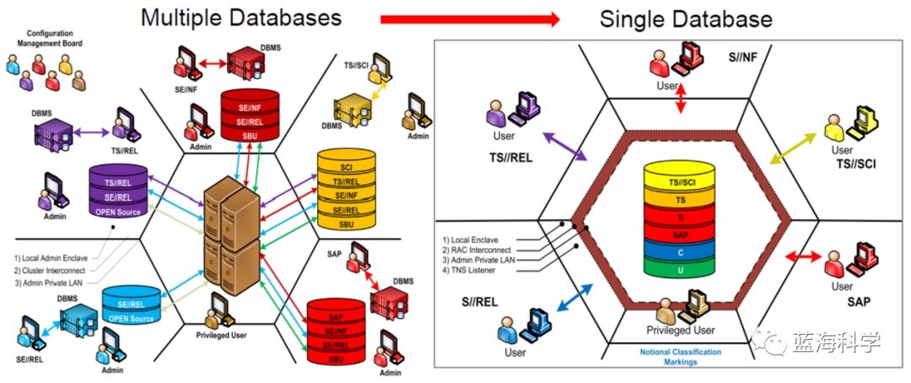
- 空军研究实验室 SecureView（安全视图）
SecureView 是空军开发的访问型 CDS 产品，使用单台计算机承载在不同分类级别上运行的多个来宾虚拟机（VM）。其架构如图所示：
其操作界面和键盘如下图所示：最有趣的是彩色键盘，可以自动识别当前操作焦点的安全级别，并显示对应颜色，以提醒操作人员。
每个物理网络接口都有一个专用的网络驱动服务虚拟机（Network Driver VM），专门管理该接口的流量。客户虚拟机可以配置为使用单个或多个VPN服务虚拟机，以便在单套或双套配置中以加密方式将数据与其他域分离。
下图是在高安全级网络（黄色）上，建立低安全级网络（红色）连接。只需要使用单套配置（即单层加密隧道）。
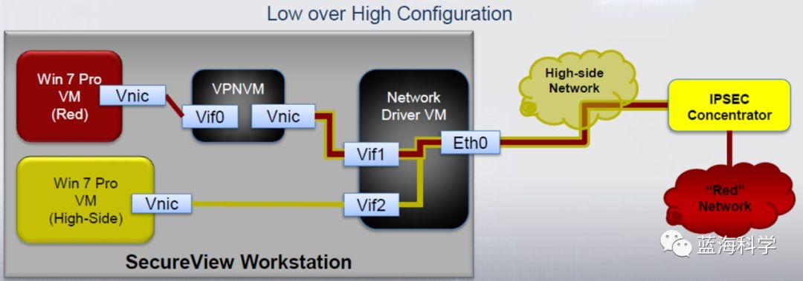
下图则是在低安全级网络（绿色）上，建立高安全级网络（红色）连接。必须需要使用双套配置（即双层加密隧道）。
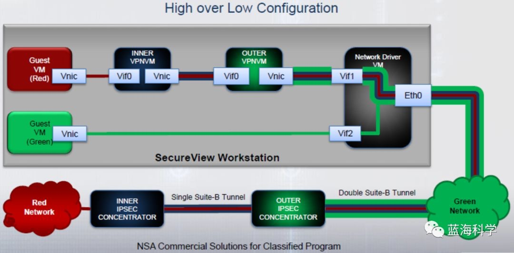
九、美军下一代CDS
即便做了这么多，美军仍然不满足现状。他们对安全的追求，看来是无止境的。
2019 年， DARPA 提出了下一代 CDS 计划 —— GAPS（物理安全保证体系结构）项目。将专门开发硬件和软件体系结构，并提供物理上可证明的保证，以隔离高风险事务，并使系统具有多级数据安全断言。
GAPS 计划通过改变体系结构来保证数据安全。以前的 ERI 体系结构探索主要关注性能，而 GAPS 体系结构将从设计开始就考虑完全。
GAPS 项目目标是开发具有可证明安全接口的硬件安全和软件体系结构，以物理隔离高风险事务。 GAPS 将创建安全的硬件和软件协同设计工具，在系统设计和系统构建期间物理隔离高风险事务，并跟踪这些在运行时物理强制执行的保护。如果用户想要对敏感数据进行计算，唯一真正的保证就是物理地跟踪数据的位置并保护所有高风险事务。
如果 GAPS 研究成功，安全地启用这些高风险事务的障碍将大大降低，从而允许：
- a）将二极管内置到协议本身中的快速计算机到计算机事务；
- b）空间隔离减少了对不可靠的软件分区解决方案（如虚拟机监控程序）的需要；
- c）更复杂的任务，而不会将敏感数据置于风险之中。
GAPS 项目的招标价格为 5440 万美元。计划分为三个技术领域（TA），共分为三个 18 个月的阶段组成。进度安排如下：
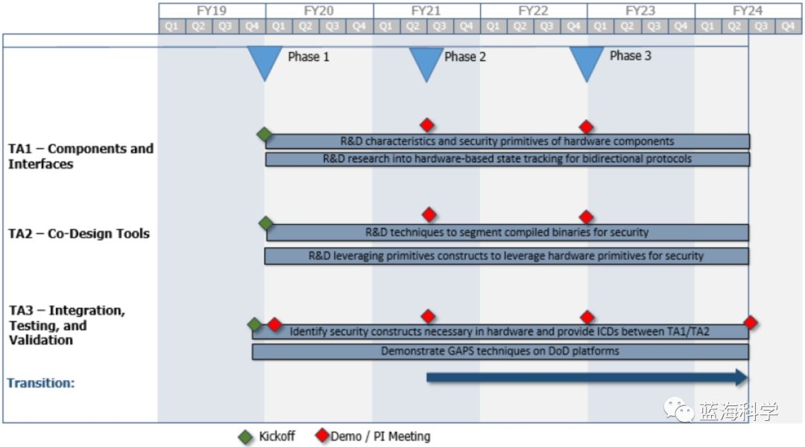
十、总结和预告
CDS 的实现是很困难的，主要有几个原因：
- CDS 是高价值目标；
- CDS 所需的隔离特性和高度保障，在主流的商用现货供应商产品中并不常见；
- 它需要一套跨多工程学科的专业技能；
- 它打开了高风险通信流，这在以前是不可用的；
- 由于存在域连接风险，在策略上会创建额外的步骤、施加限制并增加要求；
- 可用技术有限：市场不足以大到满足 COTS 的需求；
- 多级安全（MLS）依赖于具有强制访问控制的操作系统；
- 特殊要求、限制政策、可信技术、独特威胁、跨域连接的高风险，需要非凡的知识、技能，并将焦点放在 CDS 工程和测试界。
CDS启示：
- 美军 CDS 在概念的澄清/区分，场景的设计/分类，商业化的推进/鼓励，政策的推动/标准化等方面，都是值得我们借鉴的。
- 其中，最重要的是跨域政策的推动和跨域制度的标准化。如果没有标准化的跨域审批流程，仍然停留在“一事一议”的初级阶段，即便我们有再好再成熟的技术，也只能裹足不前。
对于 CDS 的介绍，就此打住吧。
至于下一次的议题，请等待下次揭晓~